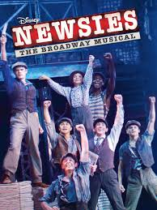
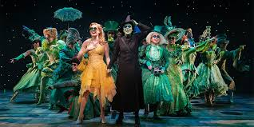
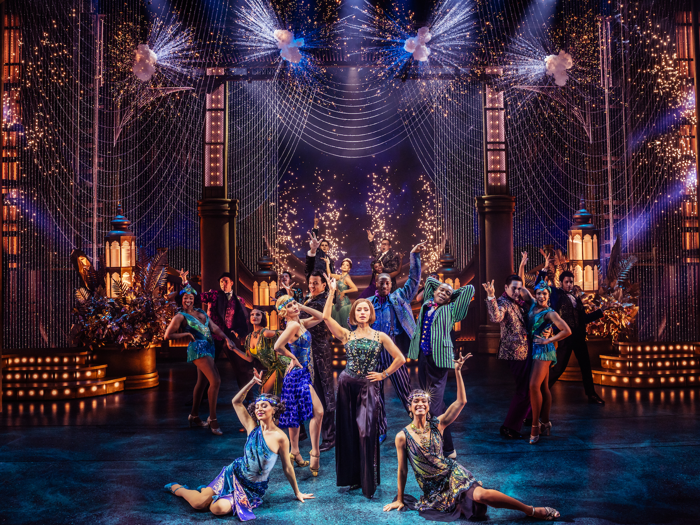

These are musicals that I could listen to them all the time.
| Movie Title | Year | Director | My Rating |
|---|---|---|---|
| Newsies | 1992 | Kenny Ortega | 10/10 |
| Wicked | 2003 | Joe Mantello | 8/10 |
| The Great Gatsby | 2024 | Marc Bruni | 9/10 |



The color scheme I chose for this was the complimentary scheme of blue and yellow. Specifically, I chose some deep rich blue colors, and rich golds to contrast. Because I chose to talk about my favorite broadway musicals, I thought the gold would bring out the fancy and spectacular feeling of a broadway show. Bold, but classy colors when paired together.